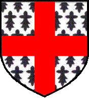
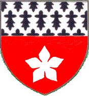
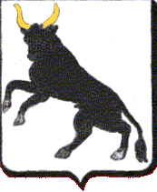
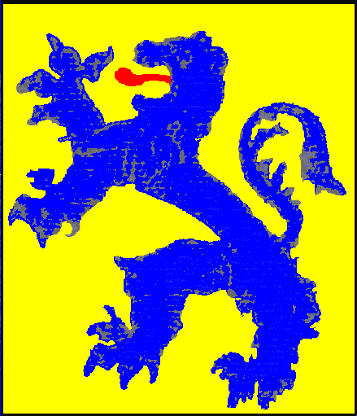
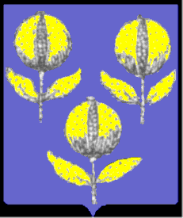

Présentation
Mon ascendance est normande, essentiellement manchoise. La plupart de mes ancêtres vivaient dans la région de Saint-Lô, mais certaines branches proviennent également du Calvados et de l'Orne.
Accès aux données généalogiques
Familles étudiées
Bien que la noblesse ne suscite chez moi qu’un intérêt limité en tant que citoyen, elle revêt une tout autre importance pour le généalogiste que je suis. La découverte d’une lignée noble dans une ascendance ouvre souvent des perspectives de recherche bien au-delà des registres paroissiaux et permet parfois de remonter jusqu’aux grandes dynasties du Moyen Âge. Ainsi, par l’intermédiaire de la famille de Brébeuf, il est possible de faire remonter cette ascendance jusqu’à Guillaume le Conquérant.
Je m'intéresse tout particulièrement aux familles suivantes :

de Caumont

de Loucelles

de Brébeuf
?
Cauvelande
de Parfouru

de Campion
?
de Garcelles
